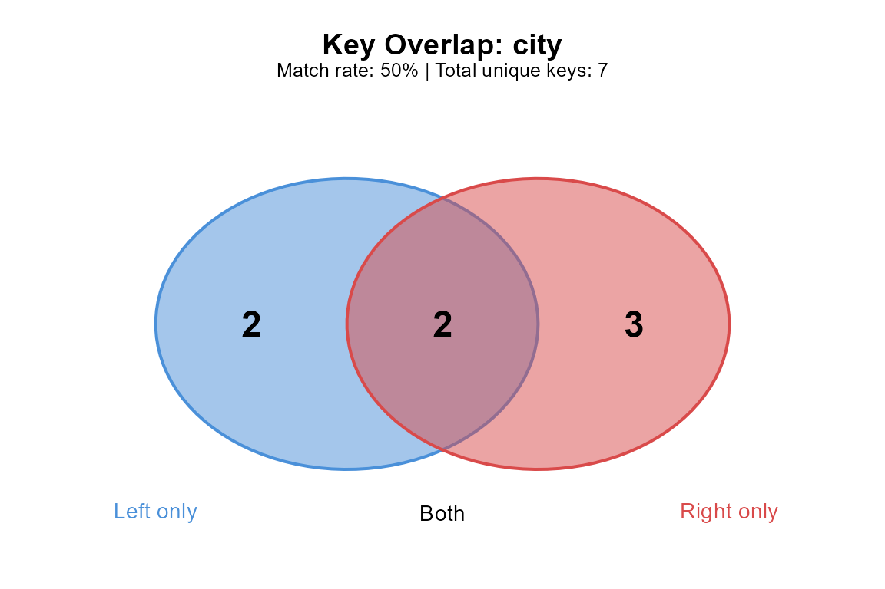

An R join returns a well-formed data frame even when half the keys
fail to match. The row count is wrong, nothing warns, and the problem
surfaces later in a plot or a summary table that doesn’t add up. The
causes are usually mundane: a trailing space in a key column, a case
difference between two source systems, a duplicate key nobody expected.
None of these show up in str() or head(), and
all of them silently change what a join returns.
joinspy works in three stages. First, diagnose:
join_spy() inspects the key columns of two tables before
they are joined, measures the overlap, predicts the row count of every
join type, and reports the string-level problems that block matches
(whitespace, case, encoding, typos). Second, repair:
join_repair() fixes the mechanical problems in one call,
with a dry-run mode to preview the changes. Third, enforce:
join_strict() lets us declare the cardinality we believe
the data has (1:1, 1:n, n:1,
n:m) and errors if the data violates it, so the output row
count is predictable by construction. Around these three sit smaller
tools: a quick pass/fail gate (key_check()), post-hoc
forensics for joins that already happened (join_explain(),
join_diff()), a row-explosion warning
(check_cartesian()), multi-step chain analysis
(analyze_join_chain()), and logging for pipelines.
joinspy performs the actual join through the engine that matches the
data: plain data frames go through base merge(), tibbles
through dplyr, and data.tables through data.table. The diagnostic layer
runs in front of whichever engine is used, so the join semantics we
already rely on stay in place and adopting joinspy amounts to changing a
function name. The *_join_spy() wrappers drop in wherever a
join already lives.
This vignette is the tour: a taste of every feature, with pointers to
the dedicated vignettes for depth.
vignette("why-keys-dont-match") covers string forensics,
vignette("common-issues") catalogues problems and fixes,
vignette("backends") covers the three join engines, and
vignette("production") covers logging and pipeline
patterns.
String Diagnostics
The keys look identical but differ at the byte level: a
trailing space, a case mismatch, an invisible Unicode character. These
differences don’t show up in str() or
summary() output, but they determine whether a join
matches. join_spy() checks every key column on both sides
and reports what it finds, grouped by issue type and tagged with a
severity. This section walks through the categories one at a time;
vignette("why-keys-dont-match") treats each in depth.
Whitespace
Trailing and leading whitespace is the most common reason keys fail
to match. A column exported from Excel might contain
"London " alongside "London", and R treats
those as distinct values.
sales <- data.frame(
city = c("London", "Paris ", " Berlin", "Tokyo"),
revenue = c(500, 300, 450, 600),
stringsAsFactors = FALSE
)
cities <- data.frame(
city = c("London", "Paris", "Berlin", "Tokyo", "Madrid"),
country = c("UK", "France", "Germany", "Japan", "Spain"),
stringsAsFactors = FALSE
)
join_spy(sales, cities, by = "city")
#>
#> ── Join Diagnostic Report ──────────────────────────────────────────────────────
#> Join columns: city
#>
#> ── Table Summary ──
#>
#> Left table: Rows: 4 Unique keys: 4 Duplicate keys: 0 NA keys: 0
#> Right table: Rows: 5 Unique keys: 5 Duplicate keys: 0 NA keys: 0
#>
#> ── Match Analysis ──
#>
#> Keys in both: 2
#> Keys only in left: 2
#> Keys only in right: 3
#> Match rate (left): "50%"
#>
#> ── Issues Detected ──
#>
#> ! Left column 'city' has 2 value(s) with leading/trailing whitespace
#> ℹ 2 near-match(es) found (e.g., 'Paris ' ~ 'Paris', ' Berlin' ~ 'Berlin') - possible typos?
#>
#> ── Expected Row Counts ──
#>
#> inner_join: 2
#> left_join: 4
#> right_join: 5
#> full_join: 7The report flags the whitespace problems and shows which values are
affected. "Paris " and " Berlin" both fail to
match, dropping the match rate from 100% to 50%. The match rate is
computed on the left table’s unique keys: of the four distinct cities in
sales, two find a counterpart in cities. The
damaged keys also surface a second way, as near matches:
"Paris " sits one edit away from "Paris", so
the report lists the pair as a possible typo even before we know the
cause is whitespace.
Whitespace problems compound with multi-column keys:
sales2 <- data.frame(
city = c("London", "Paris ", "Berlin"),
district = c("West ", "Central", " Mitte"),
revenue = c(500, 300, 450),
stringsAsFactors = FALSE
)
districts <- data.frame(
city = c("London", "Paris", "Berlin"),
district = c("West", "Central", "Mitte"),
pop = c(200000, 350000, 180000),
stringsAsFactors = FALSE
)
join_spy(sales2, districts, by = c("city", "district"))
#>
#> ── Join Diagnostic Report ──────────────────────────────────────────────────────
#> Join columns: city, district
#>
#> ── Table Summary ──
#>
#> Left table: Rows: 3 Unique keys: 3 Duplicate keys: 0 NA keys: 0
#> Right table: Rows: 3 Unique keys: 3 Duplicate keys: 0 NA keys: 0
#>
#> ── Match Analysis ──
#>
#> Keys in both: 0
#> Keys only in left: 3
#> Keys only in right: 3
#> Match rate (left): "0%"
#>
#> ── Issues Detected ──
#>
#> ! Left column 'city' has 1 value(s) with leading/trailing whitespace
#> ℹ 1 near-match(es) found (e.g., 'Paris ' ~ 'Paris') - possible typos?
#> ! Left column 'district' has 2 value(s) with leading/trailing whitespace
#> ℹ 2 near-match(es) found (e.g., 'West ' ~ 'West', ' Mitte' ~ 'Mitte') - possible typos?
#>
#> ── Per-Column Breakdown ──
#>
#> city: "66.7%" match rate (2/3)
#> district: "33.3%" match rate (1/3)
#> ℹ Lowest match rate: district
#>
#> ── Expected Row Counts ──
#>
#> inner_join: 0
#> left_join: 3
#> right_join: 3
#> full_join: 6London fails on the district column, Paris on the city column. A row
needs all key columns to match, so a single trailing space in any column
breaks the join. For composite keys the report adds a per-column
breakdown: each key column gets its own match rate, and the column with
the lowest rate is called out as the likely culprit. Here the district
column matches worse than the city column, which tells us where to look
first. That breakdown lives in the report as
multicolumn_analysis, with the weakest column named in
problem_column.
A Quick Gate: key_check()
For a pass/fail check without the full report, we can use
key_check():
key_check(sales, cities, by = "city")
#> ! Key check found 1 issue(s):
#> ✖ Left table column 'city' has whitespace issues (2 values)key_check() runs the duplicate, NA, whitespace, and case
checks (a subset of what join_spy() examines) and condenses
the answer to a single logical, returned invisibly. With
warn = TRUE (the default) it also prints which issues it
found, one line per issue. Setting warn = FALSE silences
the printing entirely, which is the mode we want inside scripts:
ok <- key_check(sales, cities, by = "city", warn = FALSE)
ok
#> [1] FALSEBecause the return value is a plain logical, it slots into
stopifnot() or conditional logic. A line like
stopifnot(key_check(x, y, by = "id", warn = FALSE)) turns
key quality into a hard precondition: the script halts at the join site
instead of producing a silently wrong result.
Keys with Different Names
Often the key columns carry different names in the two tables: the
orders table calls it id, the CRM calls it
customer_id. Renaming a column just to run a diagnostic is
busywork, so every joinspy function that takes by also
accepts the named-vector form familiar from dplyr:
sales_reps <- data.frame(
id = c("C1", "C2", "C3"),
total = c(100, 250, 175),
stringsAsFactors = FALSE
)
crm <- data.frame(
customer_id = c("C1", "C2", "C4"),
owner = c("Dana", "Eli", "Fay"),
stringsAsFactors = FALSE
)
join_spy(sales_reps, crm, by = c("id" = "customer_id"))
#>
#> ── Join Diagnostic Report ──────────────────────────────────────────────────────
#> Join columns: id = customer_id
#>
#> ── Table Summary ──
#>
#> Left table: Rows: 3 Unique keys: 3 Duplicate keys: 0 NA keys: 0
#> Right table: Rows: 3 Unique keys: 3 Duplicate keys: 0 NA keys: 0
#>
#> ── Match Analysis ──
#>
#> Keys in both: 2
#> Keys only in left: 1
#> Keys only in right: 1
#> Match rate (left): "66.7%"
#>
#> ── Expected Row Counts ──
#>
#> inner_join: 2
#> left_join: 3
#> right_join: 3
#> full_join: 4In the report header, the mapping shows as
id = customer_id, and every check runs on id
in the left table against customer_id in the right. The
same spelling works in key_check(),
join_repair(), join_strict(), and the
wrappers, so a pipeline that joins on mismatched names never needs an
intermediate rename step just to get diagnostics.
Case Mismatches
A CRM might store "ACME" while the billing system stores
"Acme", and R treats these as distinct strings.
invoices <- data.frame(
company = c("ACME", "globex", "Initech", "UMBRELLA"),
amount = c(1200, 800, 950, 1500),
stringsAsFactors = FALSE
)
vendors <- data.frame(
company = c("Acme", "Globex", "Initech", "Umbrella"),
sector = c("Manufacturing", "Logistics", "Software", "Biotech"),
stringsAsFactors = FALSE
)
join_spy(invoices, vendors, by = "company")
#>
#> ── Join Diagnostic Report ──────────────────────────────────────────────────────
#> Join columns: company
#>
#> ── Table Summary ──
#>
#> Left table: Rows: 4 Unique keys: 4 Duplicate keys: 0 NA keys: 0
#> Right table: Rows: 4 Unique keys: 4 Duplicate keys: 0 NA keys: 0
#>
#> ── Match Analysis ──
#>
#> Keys in both: 1
#> Keys only in left: 3
#> Keys only in right: 3
#> Match rate (left): "25%"
#>
#> ── Issues Detected ──
#>
#> ! 3 key(s) would match if case-insensitive (e.g., 'ACME' vs 'Acme')
#> ℹ 1 near-match(es) found (e.g., 'globex' ~ 'Globex') - possible typos?
#>
#> ── Expected Row Counts ──
#>
#> inner_join: 1
#> left_join: 4
#> right_join: 4
#> full_join: 7Only "Initech" matches exactly; the other three would be
lost in a standard join. The case-mismatch check compares the two key
sets after lowercasing and reports every pair that would match if case
were ignored, with an example pair quoted in the message. Fixing this
requires choosing a direction (lowercase everything, or uppercase
everything), which is exactly what the standardize_case
argument of join_repair() does in the next section.
Encoding and Invisible Characters
Two strings can render identically in the console but differ at the
byte level: a non-breaking space (\u00A0) versus a regular
space, a zero-width space from PDF copy-paste.
# Simulate invisible character contamination
raw_ids <- data.frame(
product_id = c("SKU-001", "SKU-002", paste0("SKU-003", "\u200B")),
batch = c("A", "B", "C"),
stringsAsFactors = FALSE
)
clean_ids <- data.frame(
product_id = c("SKU-001", "SKU-002", "SKU-003"),
warehouse = c("East", "West", "North"),
stringsAsFactors = FALSE
)
join_spy(raw_ids, clean_ids, by = "product_id")
#>
#> ── Join Diagnostic Report ──────────────────────────────────────────────────────
#> Join columns: product_id
#>
#> ── Table Summary ──
#>
#> Left table: Rows: 3 Unique keys: 3 Duplicate keys: 0 NA keys: 0
#> Right table: Rows: 3 Unique keys: 3 Duplicate keys: 0 NA keys: 0
#>
#> ── Match Analysis ──
#>
#> Keys in both: 2
#> Keys only in left: 1
#> Keys only in right: 1
#> Match rate (left): "66.7%"
#>
#> ── Issues Detected ──
#>
#> ! Left column 'product_id' has encoding issues (invisible chars or mixed encoding)
#> ℹ 3 near-match(es) found (e.g., 'SKU-003' ~ 'SKU-003', 'SKU-003' ~ 'SKU-001', 'SKU-003' ~ 'SKU-002') - possible typos?
#>
#> ── Expected Row Counts ──
#>
#> inner_join: 2
#> left_join: 3
#> right_join: 3
#> full_join: 4The zero-width space appended to "SKU-003" is invisible
when printed but prevents the match. joinspy scans for the usual
suspects: zero-width space (U+200B), zero-width non-joiner (U+200C),
zero-width joiner (U+200D), byte order mark (U+FEFF), and non-breaking
space (U+00A0). Columns that mix declared encodings are flagged as well.
These characters typically arrive via copy-paste from PDFs or web pages,
or from files saved with a byte order mark, so an encoding flag is often
a hint about an upstream pipeline step worth checking.
Near Matches
When an unmatched key sits within an edit distance of two from a key on the other side, the report lists the pair as a possible typo. Keys shorter than three characters are skipped to avoid false positives.
batches_x <- data.frame(
batch = c("LOT-A100", "LOT-B200", "LOT-C300"),
yield = c(0.92, 0.88, 0.95),
stringsAsFactors = FALSE
)
batches_y <- data.frame(
batch = c("LOT-A100", "LOT-B200", "LOT-C30O"), # final character is a letter O
supplier = c("North", "East", "West"),
stringsAsFactors = FALSE
)
join_spy(batches_x, batches_y, by = "batch")
#>
#> ── Join Diagnostic Report ──────────────────────────────────────────────────────
#> Join columns: batch
#>
#> ── Table Summary ──
#>
#> Left table: Rows: 3 Unique keys: 3 Duplicate keys: 0 NA keys: 0
#> Right table: Rows: 3 Unique keys: 3 Duplicate keys: 0 NA keys: 0
#>
#> ── Match Analysis ──
#>
#> Keys in both: 2
#> Keys only in left: 1
#> Keys only in right: 1
#> Match rate (left): "66.7%"
#>
#> ── Issues Detected ──
#>
#> ℹ 3 near-match(es) found (e.g., 'LOT-C300' ~ 'LOT-C30O', 'LOT-C300' ~ 'LOT-A100', 'LOT-C300' ~ 'LOT-B200') - possible typos?
#>
#> ── Expected Row Counts ──
#>
#> inner_join: 2
#> left_join: 3
#> right_join: 3
#> full_join: 4"LOT-C300" and "LOT-C30O" differ by a
single character, a digit zero against a letter O, which is the kind of
error manual data entry produces. Near matches carry severity
"info" rather than "warning" because the
package cannot know whether two similar keys are a typo or two genuinely
distinct values. They are surfaced for human review;
join_repair() deliberately leaves them alone.
Type Mismatches
Key columns can also disagree about type. An identifier stored as numeric on one side and character on the other is common when one table comes from a database and the other from a CSV reader.
shipments <- data.frame(zip = c(1010, 1020, 1030), n_parcels = c(5, 7, 2))
zones <- data.frame(
zip = c("1010", "1020", "1030"),
zone = c("Inner", "Mid", "Outer"),
stringsAsFactors = FALSE
)
join_spy(shipments, zones, by = "zip")
#>
#> ── Join Diagnostic Report ──────────────────────────────────────────────────────
#> Join columns: zip
#>
#> ── Table Summary ──
#>
#> Left table: Rows: 3 Unique keys: 3 Duplicate keys: 0 NA keys: 0
#> Right table: Rows: 3 Unique keys: 3 Duplicate keys: 0 NA keys: 0
#>
#> ── Match Analysis ──
#>
#> Keys in both: 3
#> Keys only in left: 0
#> Keys only in right: 0
#> Match rate (left): "100%"
#>
#> ── Issues Detected ──
#>
#> ! Type mismatch: 'zip' is numeric, 'zip' is character - may cause unexpected results
#>
#> ── Expected Row Counts ──
#>
#> inner_join: 3
#> left_join: 3
#> right_join: 3
#> full_join: 3The match analysis still predicts full overlap because R coerces
numeric to character when comparing the key sets, and base
merge() does the same when joining. dplyr’s join verbs
refuse to join a double column to a character column, so the same two
tables join under one backend and error under another. The type-mismatch
warning catches the disagreement before the backend choice decides the
outcome. The report also warns about character-versus-factor pairs,
mismatched factor levels, and numeric keys that risk floating-point or
large-integer precision loss.
Combining Multiple Issues
Real data rarely has just one problem. join_spy() checks
for whitespace, case, and encoding issues in one call and reports them
together, grouped by type.
employees <- data.frame(
dept = c("Sales ", "ENGINEERING", "marketing", paste0("HR", "\u00A0")),
name = c("Alice", "Bob", "Carol", "David"),
stringsAsFactors = FALSE
)
departments <- data.frame(
dept = c("Sales", "Engineering", "Marketing", "HR"),
budget = c(50000, 80000, 45000, 30000),
stringsAsFactors = FALSE
)
join_spy(employees, departments, by = "dept")
#>
#> ── Join Diagnostic Report ──────────────────────────────────────────────────────
#> Join columns: dept
#>
#> ── Table Summary ──
#>
#> Left table: Rows: 4 Unique keys: 4 Duplicate keys: 0 NA keys: 0
#> Right table: Rows: 4 Unique keys: 4 Duplicate keys: 0 NA keys: 0
#>
#> ── Match Analysis ──
#>
#> Keys in both: 0
#> Keys only in left: 4
#> Keys only in right: 4
#> Match rate (left): "0%"
#>
#> ── Issues Detected ──
#>
#> ! Left column 'dept' has 1 value(s) with leading/trailing whitespace
#> ! Left column 'dept' has encoding issues (invisible chars or mixed encoding)
#> ! 2 key(s) would match if case-insensitive (e.g., 'ENGINEERING' vs 'Engineering')
#> ℹ 3 near-match(es) found (e.g., 'Sales ' ~ 'Sales', 'marketing' ~ 'Marketing', 'HR ' ~ 'HR') - possible typos?
#>
#> ── Expected Row Counts ──
#>
#> inner_join: 0
#> left_join: 4
#> right_join: 4
#> full_join: 8Zero matches out of four rows, with the problems grouped by type. The
fix differs per category: whitespace is safe to trim automatically, case
standardization requires choosing a direction, and encoding issues may
indicate deeper pipeline problems. The severity tags help with triage. A
"warning" (duplicates, whitespace, NA keys,
numeric/character type clashes) changes join results in ways that
usually matter. Entries tagged "info", like empty strings,
factor level differences, and near matches, deserve a look but are
sometimes intentional.
Duplicate Keys
Duplicates don’t prevent matches, but they multiply rows. If
"London" appears three times in the left table and twice in
the right, we get six rows for London after an inner join.
key_duplicates() returns the offending rows along with a
count:
transactions <- data.frame(
store_id = c("S1", "S1", "S2", "S3", "S3", "S3"),
day = c("Mon", "Tue", "Mon", "Mon", "Tue", "Wed"),
amount = c(100, 200, 150, 300, 250, 400),
stringsAsFactors = FALSE
)
key_duplicates(transactions, by = "store_id")
#> store_id day amount .n_duplicates
#> 1 S1 Mon 100 2
#> 2 S1 Tue 200 2
#> 4 S3 Mon 300 3
#> 5 S3 Tue 250 3
#> 6 S3 Wed 400 3The .n_duplicates column maps directly to the row
multiplication factor in a join: a key with .n_duplicates
of 3 contributes three rows for every matching row on the other side.
The keep argument accepts "first",
"last", or the default "all". With
"first" or "last", only one representative row
per duplicated key is returned, which is handy when we want one row per
key to inspect rather than the full set:
key_duplicates(transactions, by = "store_id", keep = "first")
#> store_id day amount .n_duplicates
#> 1 S1 Mon 100 2
#> 4 S3 Mon 300 3key_duplicates() also takes composite keys
(by = c("store_id", "day")), in which case a row counts as
a duplicate only when all key columns repeat together. A row whose key
contains an NA in any component is treated as having an NA key, matching
how joins treat missing key components.
What to do about duplicates depends on what they mean. When the
duplicates are legitimate detail rows (multiple transactions per store),
the usual move is to aggregate to the key level before joining, or to
keep the detail and declare the relationship with
join_strict(..., expect = "n:1") so the expansion is
explicit. When the duplicates are accidental (a double-loaded file, a
botched append), deduplicate first; keep = "first" gives a
quick way to pick a representative row, though deciding which row to
trust is a data question, and the answer belongs in the script rather
than in a silent default.
The JoinReport Object
Every diagnostic in the previous section came from printing a
JoinReport, the object that join_spy()
returns. The printed form is a summary; the object underneath holds
everything the analysis found, which is what we want when reacting to
diagnostics programmatically.
report <- join_spy(sales, cities, by = "city")
names(report)
#> [1] "x_summary" "y_summary" "match_analysis"
#> [4] "issues" "expected_rows" "by"
#> [7] "multicolumn_analysis" "memory_estimate"The components mirror the printed sections. x_summary
and y_summary describe each table’s keys: row count
(n_rows), distinct keys (n_unique), duplicated
keys (n_duplicates) and the rows they occupy
(n_duplicate_rows), missing keys (n_na), and
the duplicated key values themselves (duplicate_keys).
match_analysis holds the overlap: counts of matched,
left-only, and right-only keys, the match rate, and the actual key
vectors so we can see which values fell on each side.
expected_rows predicts the result size for all four join
types, by records the join columns,
multicolumn_analysis carries the per-column breakdown for
composite keys, and memory_estimate sizes the expected
result.
report$match_analysis$match_rate
#> [1] 0.5
report$match_analysis$left_only_keys
#> [1] "Paris " " Berlin"The two left-only keys are the whitespace-damaged values. Pulling them out of the report like this is how a pipeline can branch on diagnostics: quarantine the unmatched keys, write them to a review file, or fail the run if the match rate drops below an agreed floor.
The summaries are useful on their own, before any matching question
arises. x_summary$duplicate_keys names the keys that
repeat, and comparing n_rows to n_unique is
the one-line answer to whether a table can serve as a lookup. These are
the same numbers the printed report displays; the components just make
them addressable.
issues is a list with one entry per detected problem.
Each entry carries a type, a severity
("warning" or "info"), a human-readable
message, and usually a details element with
the affected values.
vapply(report$issues, function(i) i$type, character(1))
#> [1] "whitespace" "near_match"
report$issues[[1]]$message
#> [1] "Left column 'city' has 2 value(s) with leading/trailing whitespace"print(), summary(), and plot()
Three S3 methods cover the common ways of consuming a report.
print() produces the full console report we have been
reading all along. summary() flattens the headline numbers
into a data frame with one metric per row, which is the form to keep
when collecting diagnostics across many joins:
summary(report)
#> metric value
#> 1 left_rows 4.0
#> 2 right_rows 5.0
#> 3 left_unique_keys 4.0
#> 4 right_unique_keys 5.0
#> 5 keys_matched 2.0
#> 6 keys_left_only 2.0
#> 7 keys_right_only 3.0
#> 8 match_rate 0.5
#> 9 issues 2.0
#> 10 inner_join_rows 2.0
#> 11 left_join_rows 4.0
#> 12 right_join_rows 5.0
#> 13 full_join_rows 7.0summary() also takes a format argument:
"text" prints aligned key-value pairs, and
"markdown" prints a table ready to paste into a report or
an issue tracker.
summary(report, format = "markdown")
#> | Metric | Value |
#> |--------|-------|
#> | left_rows | 4 |
#> | right_rows | 5 |
#> | left_unique_keys | 4 |
#> | right_unique_keys | 5 |
#> | keys_matched | 2 |
#> | keys_left_only | 2 |
#> | keys_right_only | 3 |
#> | match_rate | 0.5 |
#> | issues | 2 |
#> | inner_join_rows | 2 |
#> | left_join_rows | 4 |
#> | right_join_rows | 5 |
#> | full_join_rows | 7 |plot() draws the key overlap as a Venn diagram, with the
left-only, shared, and right-only key counts in the three regions and
the match rate in the subtitle:
plot(report)
The picture makes the diagnosis immediate: two keys live only in
sales (the damaged Paris and Berlin), two are shared, and
three live only in cities. The figure earns its place when
the audience is wider than the analyst: a Venn diagram in a data-quality
writeup communicates “half our keys have no counterpart” faster than a
table of counts does. The file argument saves the same
figure to disk (PNG, SVG, or PDF, chosen by the file extension) and
colors controls the two circle colours. The method
invisibly returns the three counts, so the numbers behind the figure
stay available. For checking report objects in defensive code,
is_join_report() tests the class:
is_join_report(report)
#> [1] TRUEThis matters in pipelines that call last_report()
(introduced below), which returns NULL when no join has run
yet.
Auto-Repair
join_repair() handles whitespace trimming, case
standardization, invisible character removal, and empty-to-NA conversion
in a single call. Each fix is controlled by its own argument:
trim_whitespace (default TRUE),
standardize_case ("lower",
"upper", or the default NULL for no change),
remove_invisible (default TRUE), and
empty_to_na (default FALSE). Only the key
columns named in by are touched, and only when they are
character; numeric and factor key columns pass through unchanged.
Dry Run
We can preview what join_repair() would change with
dry_run = TRUE:
messy_left <- data.frame(
id = c(" A-101", "B-202 ", "c-303", paste0("D-404", "\u200B")),
score = c(88, 92, 76, 95),
stringsAsFactors = FALSE
)
messy_right <- data.frame(
id = c("A-101", "B-202", "C-303", "D-404"),
label = c("Alpha", "Beta", "Gamma", "Delta"),
stringsAsFactors = FALSE
)
join_repair(messy_left, messy_right, by = "id", dry_run = TRUE)
#>
#> ── Repair Preview (Dry Run) ────────────────────────────────────────────────────
#>
#> ── Left table (x) ──
#>
#> ℹ id: trimmed whitespace (2), removed invisible chars (1)The dry run shows how many values will change and what kind of change each column needs, without touching the original data. Running the preview first is worth the extra line whenever the keys carry meaning: case standardization in particular rewrites values, and a dry run confirms it will only rewrite the ones we expect.
Applying Repairs
Drop dry_run (or set it to FALSE) to get
back the repaired data frames. When we pass both x and
y, the return value is a list with both:
repaired <- join_repair(
messy_left, messy_right,
by = "id",
trim_whitespace = TRUE,
standardize_case = "upper",
remove_invisible = TRUE
)
#> ✔ Repaired 4 value(s)
repaired$x$id
#> [1] "A-101" "B-202" "C-303" "D-404"
repaired$y$id
#> [1] "A-101" "B-202" "C-303" "D-404"Both sides now have clean, uppercase, whitespace-free keys. We can
confirm with key_check():
key_check(repaired$x, repaired$y, by = "id")
#> ✔ Key check passed: no issues detectedThe diagnose-repair-verify loop is the core workflow:
join_spy() names the problems, join_repair()
fixes the mechanical ones, and key_check() confirms the
keys are clean before the join runs. The non-key columns
(score and label here) are never modified, so
repairs cannot corrupt the data the join is meant to carry.
Repairing a Single Table
When y is omitted, join_repair() returns
the repaired x directly rather than a list. This is the
form to use when cleaning a table once, before joining it against
several others:
codes <- data.frame(
code = c(" X1", "X2 ", ""),
n = 1:3,
stringsAsFactors = FALSE
)
join_repair(codes, by = "code", empty_to_na = TRUE)
#> ✔ Repaired 3 value(s)
#> code n
#> 1 X1 1
#> 2 X2 2
#> 3 <NA> 3The empty_to_na flag converts empty strings to
NA. The distinction matters for joins: two empty strings
match each other, so a stray "" on both sides quietly joins
rows that have no business being paired, while NA keys
never match anything. Converting makes the missingness explicit.
What Repair Does Not Fix
join_repair() fixes mechanical string problems:
whitespace, case, invisible characters, empty strings. It does not fix
typos, semantic mismatches, or different key formats ("USA"
vs. "United States"). Typos surface in the report as near
matches and need human judgment, since an automated fix could merge keys
that are genuinely distinct. Format mismatches need a recoding table.
vignette("common-issues") walks through both, alongside the
rest of the problem catalogue.
Repair Suggestions from a Report
If we already have a JoinReport from
join_spy(), suggest_repairs() generates
ready-to-run code that fixes the detected issues:
report <- join_spy(messy_left, messy_right, by = "id")
suggest_repairs(report)
#>
#> ── Suggested Repairs ───────────────────────────────────────────────────────────
#> x[["id"]] <- trimws(x[["id"]])
#> # Remove invisible characters:
#> x[["id"]] <- gsub("[\u200B\u200C\u200D\uFEFF\u00A0]", "", x[["id"]], perl = TRUE)
#> # Standardize case:
#> x[["id"]] <- tolower(x[["id"]])
#> y[["id"]] <- tolower(y[["id"]])The generated code calls base R functions (trimws(),
tolower(), gsub()) keyed to what the report
detected, covering whitespace, case, empty-string, and encoding issues.
The snippets are also returned invisibly as a character vector, so they
can be written to a script file. This path suits the case where we want
the fix recorded as explicit code in the analysis script rather than
hidden inside a join_repair() call.
Row Count Predictions
Every JoinReport includes an expected_rows
component that predicts how many rows each join type will produce,
calculated from key overlap and duplicate structure.
orders <- data.frame(
product_id = c("P1", "P1", "P2", "P3", "P4"),
quantity = c(10, 5, 20, 15, 8),
stringsAsFactors = FALSE
)
products <- data.frame(
product_id = c("P1", "P2", "P3", "P5"),
name = c("Widget", "Gadget", "Gizmo", "Doohickey"),
stringsAsFactors = FALSE
)
report <- join_spy(orders, products, by = "product_id")
report$expected_rows
#> $inner
#> [1] 4
#>
#> $left
#> [1] 5
#>
#> $right
#> [1] 5
#>
#> $full
#> [1] 6A left join here retains all five order rows (with NA
for the unmatched "P4"), while an inner join drops it.
For each join type, the calculation counts overlapping keys and
multiplies by the number of duplicates on each side. A key appearing
twice in x and three times in y contributes 2
* 3 = 6 rows to an inner join. The other join types build on that base:
the left prediction adds the unmatched left rows, the right prediction
adds the unmatched right rows, and the full prediction adds both. The
calculation is exact when all keys are non-NA and no string issues
remain. NA keys deserve caution: R’s merge() and dplyr both
skip NAs by default, so the predicted count may overestimate. The report
warns when NAs are present.
Checking the prediction before running the join is the cheapest
correctness test joins offer. If we believe the join is a simple lookup
and expected_rows$left exceeds nrow(x), the
belief is wrong, and we have learned it before any rows were produced.
The wrappers in the next section automate exactly this comparison.
Beyond row counts, the predictions also translate into a size estimate:
report$memory_estimate
#> $inner
#> [1] "1.7 KB"
#>
#> $left
#> [1] "2.1 KB"
#>
#> $right
#> [1] "2.1 KB"
#>
#> $full
#> [1] "2.6 KB"memory_estimate multiplies the predicted row count by
the average bytes per row in the inputs, scaled up for the extra columns
the result carries. It is a heuristic, useful for the order of
magnitude: when a join we expect to return megabytes is predicted in
gigabytes, something is wrong with the keys, and we have found out
without allocating the result.
summary() returns the same information as a compact data
frame:
summary(report)
#> metric value
#> 1 left_rows 5.00
#> 2 right_rows 4.00
#> 3 left_unique_keys 4.00
#> 4 right_unique_keys 4.00
#> 5 keys_matched 3.00
#> 6 keys_left_only 1.00
#> 7 keys_right_only 1.00
#> 8 match_rate 0.75
#> 9 issues 1.00
#> 10 inner_join_rows 4.00
#> 11 left_join_rows 5.00
#> 12 right_join_rows 5.00
#> 13 full_join_rows 6.00Sampling Large Tables
On tables with millions of rows, the string scans take noticeable
time. The sample argument caps how many rows each table
contributes to the analysis:
set.seed(7)
big_orders <- data.frame(
product_id = sample(sprintf("P%04d", 1:5000), 20000, replace = TRUE),
qty = sample(1:10, 20000, replace = TRUE)
)
catalog <- data.frame(
product_id = sprintf("P%04d", 1:5000),
price = round(runif(5000, 1, 100), 2)
)
report_big <- join_spy(big_orders, catalog, by = "product_id", sample = 2000)
report_big$sampling
#> $sampled
#> [1] TRUE
#>
#> $original_x_rows
#> [1] 20000
#>
#> $original_y_rows
#> [1] 5000
#>
#> $sample_size
#> [1] 2000When sampling kicks in, the report records the original row counts alongside the sample size, and the printed report carries a notice. The trade-off is exactness: match rates and row predictions then describe the sample, so treat them as estimates of the full-table values. Issue detection still works well under sampling, since a systematic problem like trailing whitespace shows up in any reasonably sized sample. A practical division of labour is to sample during interactive exploration, where we mostly want to know whether the keys are clean and roughly how they overlap, and to run the full analysis once before the join that matters, where the exact row prediction is the payoff.
Post-Join Diagnostics
Sometimes the join has already happened and we need to understand the
result. Maybe the join sits in someone else’s code, maybe the inputs are
gone from memory and only the output survived a long pipeline run, or
maybe we are reviewing a script where the row count quietly doubles
between two steps. Two functions cover this direction:
join_explain() reconstructs why a result has the size it
has, and join_diff() compares a table to its post-join
self.
Explaining Row Count Changes
join_explain() takes the result, the two input tables,
and the join column, then explains why the row count changed:
tickets <- data.frame(
event_id = c(1, 2, 2, 3),
seat = c("A1", "B2", "B3", "C1"),
stringsAsFactors = FALSE
)
events <- data.frame(
event_id = c(1, 2, 4),
name = c("Concert", "Play", "Opera"),
stringsAsFactors = FALSE
)
result <- merge(tickets, events, by = "event_id")
expl <- join_explain(result, tickets, events, by = "event_id", type = "inner")
#>
#> ── Join Explanation ────────────────────────────────────────────────────────────
#>
#> ── Row Counts ──
#>
#> Left table (x): 4 rows
#> Right table (y): 3 rows
#> Result: 3 rows
#> ℹ Result has 1 fewer rows than left table
#>
#> ── Why the row count changed ──
#>
#> ℹ Left table has 1 duplicate key(s) - each match creates multiple rows
#> ℹ Inner join dropped 1 unmatched left rowsThe output has two parts. The row-count section states the before and
after sizes and flags the direction of the change. The explanation
section then decomposes the change into its causes: duplicate keys
multiplying rows, unmatched keys being dropped or padded, and NA keys
that never match. Usually when a table grows unexpectedly, the answer is
a handful of keys with duplicates on one side. Passing type
tells the function which join was performed so it attributes dropped
rows correctly.
The explanation is also returned invisibly as a list, with the row counts, the difference, per-side duplicate counts, and the matched/left-only/right-only key counts:
expl$diff
#> [1] -1
expl$left_only
#> [1] 1The result lost one row relative to tickets and one left
key had no match: the inner join dropped event 3. Capturing the list
lets a pipeline assert on the decomposition, for example failing the run
whenever left_only is nonzero.
Before/After Comparison
join_diff() compares a data frame before and after a
join to show which rows were added, dropped, or preserved:
before <- data.frame(
id = 1:4,
value = c("a", "b", "c", "d"),
stringsAsFactors = FALSE
)
lookup <- data.frame(
id = c(2, 3, 4, 5),
extra = c("X", "Y", "Z", "W"),
stringsAsFactors = FALSE
)
after <- merge(before, lookup, by = "id", all = TRUE)
join_diff(before, after, by = "id")
#>
#> ── Join Diff ───────────────────────────────────────────────────────────────────
#>
#> ── Dimensions ──
#>
#> Before: 4 rows x 2 columns
#> After: 5 rows x 3 columns
#> Change: "+1" rows, "+1" columns
#>
#> ── Column Changes ──
#>
#> ✔ Added: extra
#>
#> ── Key Analysis ──
#>
#> Unique keys before: 4
#> Unique keys after: 5With all = TRUE nothing is dropped: the row for
id = 1 survives with NA in extra,
and id = 5 enters from the lookup side. The diff reports
one added row, one added column, and one more unique key after the join
than before. The by argument is optional; without it the
comparison covers dimensions and columns only, and with it
join_diff() adds the key analysis.
Here is a second example that highlights row addition from duplicates rather than new keys:
before2 <- data.frame(
id = c(1, 2, 3),
value = c("a", "b", "c"),
stringsAsFactors = FALSE
)
dup_lookup <- data.frame(
id = c(1, 1, 2, 3),
tag = c("X", "Y", "Z", "W"),
stringsAsFactors = FALSE
)
after2 <- merge(before2, dup_lookup, by = "id")
d <- join_diff(before2, after2, by = "id")
#>
#> ── Join Diff ───────────────────────────────────────────────────────────────────
#>
#> ── Dimensions ──
#>
#> Before: 3 rows x 2 columns
#> After: 4 rows x 3 columns
#> Change: "+1" rows, "+1" columns
#>
#> ── Column Changes ──
#>
#> ✔ Added: tag
#>
#> ── Key Analysis ──
#>
#> Unique keys before: 3
#> Unique keys after: 3
#> Duplicate rows: "+2"The row count grew from three to four because id = 1
matched two rows in the lookup. No new keys were introduced; the growth
came entirely from duplicate expansion, and the key analysis shows it as
duplicate rows appearing where there were none. join_diff()
distinguishes these two sources of row addition (new keys vs. duplicate
expansion). Like join_explain(), it returns its findings
invisibly, including the added and removed column names:
d$columns_added
#> [1] "tag"Safe Join Wrappers
The *_join_spy() family wraps standard joins with
automatic diagnostics. They print a report before joining and return the
joined data frame:
patients <- data.frame(
patient_id = c("P01", "P02", "P03"),
age = c(34, 28, 45),
stringsAsFactors = FALSE
)
labs <- data.frame(
patient_id = c("P01", "P02", "P04"),
result = c(5.2, 3.8, 6.1),
stringsAsFactors = FALSE
)
result <- left_join_spy(patients, labs, by = "patient_id")
#>
#> ── Join Diagnostic Report ──────────────────────────────────────────────────────
#> Join columns: patient_id
#>
#> ── Table Summary ──
#>
#> Left table: Rows: 3 Unique keys: 3 Duplicate keys: 0 NA keys: 0
#> Right table: Rows: 3 Unique keys: 3 Duplicate keys: 0 NA keys: 0
#>
#> ── Match Analysis ──
#>
#> Keys in both: 2
#> Keys only in left: 1
#> Keys only in right: 1
#> Match rate (left): "66.7%"
#>
#> ── Issues Detected ──
#>
#> ℹ 3 near-match(es) found (e.g., 'P03' ~ 'P01', 'P03' ~ 'P02', 'P03' ~ 'P04') - possible typos?
#>
#> ── Expected Row Counts ──
#>
#> inner_join: 2
#> left_join: 3
#> right_join: 3
#> full_join: 4
#> ℹ Performing "left" join...
#> ✔ Result: 3 rows (as expected)
head(result)
#> patient_id age result
#> 1 P01 34 5.2
#> 2 P02 28 3.8
#> 3 P03 45 NAAfter the report, the wrapper announces the join, performs it, and
compares the actual row count to the prediction, flagging any
discrepancy. That final check closes the loop: a mismatch between
predicted and actual rows means the prediction’s assumptions (usually
around NA keys) did not hold, and the message says so at the join site.
All four wrappers (left_join_spy,
right_join_spy, inner_join_spy,
full_join_spy) share the same interface. The wrappers are
convenient for exploratory work; in production, we might prefer calling
join_spy() first and inspecting the report programmatically
before proceeding, or join_strict() when there is a
cardinality worth enforcing. The wrappers also accept a
backend parameter ("base",
"dplyr", or "data.table") that overrides
automatic backend detection.
Every wrapper attaches the full report to the result as an attribute, so the diagnostics travel with the data:
rpt <- attr(result, "join_report")
rpt$expected_rows$left
#> [1] 3A function several layers downstream can recover the report from the data frame it received and check what happened at the join, with no extra plumbing.
Quiet Mode and Deferred Reports
In pipelines, printed output can be distracting. With
.quiet = TRUE, the report is suppressed and can be
retrieved afterward via last_report():
result <- inner_join_spy(patients, labs, by = "patient_id", .quiet = TRUE)
# Later, inspect what happened
rpt <- last_report()
rpt$match_analysis$match_rate
#> [1] 0.6666667last_report() returns the report from the most recent
*_join_spy() call and persists for the duration of the R
session. Printing is governed by two arguments: the report prints when
verbose = TRUE (the default) and
.quiet = FALSE, and either verbose = FALSE or
.quiet = TRUE silences it. The diagnostics themselves
always run: quiet mode changes what is shown, and the report is still
computed, stored for last_report(), attached as an
attribute, and written to the log file when logging is enabled.
Cardinality Enforcement
Every join has an intended cardinality: a lookup table is
1:n, a one-to-one mapping is 1:1.
join_strict() lets you declare that relationship. If the
data violates it, the join errors instead of producing a wrong-sized
result. The output row count is determined by the constraint you
specify.
sensors <- data.frame(
sensor_id = c("T1", "T2", "T3"),
location = c("Roof", "Basement", "Lobby"),
stringsAsFactors = FALSE
)
readings <- data.frame(
sensor_id = c("T1", "T2", "T3"),
value = c(22.1, 18.5, 21.0),
stringsAsFactors = FALSE
)
# Succeeds: one reading per sensor
join_strict(sensors, readings, by = "sensor_id", expect = "1:1")
#> sensor_id location value
#> 1 T1 Roof 22.1
#> 2 T2 Basement 18.5
#> 3 T3 Lobby 21.0
# Fails: T1 has two readings, violating 1:1
readings_dup <- data.frame(
sensor_id = c("T1", "T1", "T2", "T3"),
value = c(22.1, 23.4, 18.5, 21.0),
stringsAsFactors = FALSE
)
join_strict(sensors, readings_dup, by = "sensor_id", expect = "1:1")
#> Error in `join_strict()`:
#> ! Cardinality violation: expected "1:1" but found "1:n".
#> ℹ Left duplicates: 0, right duplicates: 1.The error names both the expected and the observed cardinality and
reports the duplicate counts on each side, so the message alone usually
identifies which table broke the contract. The expect
argument accepts four cardinality levels:
"1:1": both sides have unique keys. Any duplicate on either side is an error."1:n": the left table has unique keys, the right may repeat. The classic lookup-table join."n:1": the mirror of"1:n". The right table is the lookup."n:m": duplicates allowed on both sides. Rarely what we want; exists as an explicit opt-in for intentional Cartesian products per key.
The long spellings "1:many", "many:1", and
"many:many" are accepted as synonyms. The type
argument selects the join itself ("left" by default, or
"right", "inner", "full"), and
backend passes through to the same engine dispatch the
wrappers use, so a strict join runs on dplyr or data.table just as
readily as on base R.
The same duplicated readings that broke the 1:1 contract
pass cleanly once we declare the relationship we actually have, one
sensor to many readings:
join_strict(sensors, readings_dup, by = "sensor_id", expect = "1:n")
#> sensor_id location value
#> 1 T1 Roof 22.1
#> 2 T1 Roof 23.4
#> 3 T2 Basement 18.5
#> 4 T3 Lobby 21.0The result has four rows, one per reading, and that growth is now
expected rather than accidental. This is the working pattern for
join_strict(): pick the tightest constraint the data model
supports, and let the function complain when reality disagrees.
The constraint is evaluated on the duplicate structure of the whole
key columns, before any joining happens. That makes
join_strict() a contract on the tables themselves:
declaring expect = "1:n" in a script documents the assumed
data model, and the script stops the day an upstream source starts
shipping duplicate keys.
To detect the actual cardinality without enforcing anything:
detect_cardinality(sensors, readings_dup, by = "sensor_id")
#> ℹ Detected cardinality: "1:n"
#> Right duplicates: 1 key(s)The classification follows from where the duplicates sit: duplicates
on both sides give "n:m", duplicates only on the left give
"n:1", only on the right "1:n", and none
"1:1". Alongside the printed summary, the string is
returned invisibly, so we can use it programmatically: to select the
right expect value, or to log the cardinality of a feed
over time and notice when it drifts.
Advanced Features
Cartesian Product Detection
When both tables have duplicates on the same key, the join produces
the Cartesian product of those duplicates. Two keys with 100 rows each
produce 10,000 rows for that key alone. check_cartesian()
warns before this happens:
left <- data.frame(
group = c("A", "A", "A", "B"),
x = 1:4,
stringsAsFactors = FALSE
)
right <- data.frame(
group = c("A", "A", "B", "B"),
y = 5:8,
stringsAsFactors = FALSE
)
cart <- check_cartesian(left, right, by = "group")
#> ✔ No Cartesian product risk (expansion factor: 2x)The function computes, per matched key, the product of its occurrence counts on the two sides, and sums these into the predicted inner-join size; the expansion factor is that total divided by the larger of the two input row counts. Here key A contributes 3 * 2 = 6 rows and key B contributes 1 * 2 = 2, so the four-row inputs produce eight rows, an expansion factor of 2:
cart$expansion_factor
#> [1] 2
cart$worst_keys
#> key x_count y_count product
#> A A 3 2 6
#> B B 1 2 2The threshold argument (default 10) sets how large the
expansion factor must be before the function reports a risk. A clean
lookup join keeps the factor at 1 or below, and pushing it past 10
essentially requires duplicates on both sides of the same key, which is
why 10 makes a sensible default boundary between intended expansion and
an accident. For a pipeline where every join should be near 1:1, a
tighter threshold catches trouble earlier:
check_cartesian(left, right, by = "group", threshold = 1.5)
#> ✖ Cartesian product risk: result will be 2x larger than input
#>
#> ── Worst offending keys ──
#>
#> "A": 3 x 2 = 6 rows
#> "B": 1 x 2 = 2 rowsThe warning ranks the worst offending keys by their row product,
which is the right place to start: in real data, Cartesian blowups
usually trace back to a few catch-all keys (an "UNKNOWN"
code, an empty-string id) that are heavily duplicated on both sides.
Multi-Table Join Chains
analyze_join_chain() runs diagnostics across a sequence
of joins. We provide a named list of tables and a list of join
specifications:
orders <- data.frame(order_id = 1:4, customer_id = c(1, 2, 2, 3))
customers <- data.frame(customer_id = 1:3, region_id = c(1, 1, 2))
regions <- data.frame(region_id = 1:2, name = c("North", "South"),
stringsAsFactors = FALSE)
chain <- analyze_join_chain(
tables = list(orders = orders, customers = customers, regions = regions),
joins = list(
list(left = "orders", right = "customers", by = "customer_id"),
list(left = "result", right = "regions", by = "region_id")
)
)
#>
#> ── Join Chain Analysis ─────────────────────────────────────────────────────────
#>
#> ── Step 1: orders + customers ──
#>
#> Left: 4 rows
#> Right: 3 rows
#> Match rate: 100%
#> Expected result: 4 rows (left join)
#> ! 1 issue(s) detected
#>
#> ── Step 2: result + regions ──
#>
#> Left: 4 rows
#> Right: 2 rows
#> Match rate: 100%
#> Expected result: 4 rows (left join)
#> ! 1 issue(s) detected
#>
#> ── Chain Summary ──
#>
#> ! Total issues across chain: 2Each step prints its input sizes, match rate, expected left-join row
count, and issue count, followed by a chain-level summary. The special
name "result" refers to the output of the previous join, so
we can chain as many tables as needed. Because "result"
resolves to the actual intermediate data (built with left joins), key
diagnostics at step two account for any NAs or key distribution changes
introduced by the first join. This matters in star-schema assembly,
where a problem in the first join (a duplicate dimension key, say) only
becomes visible as row growth two joins later.
The return value is a list with one element per step, each holding
the step’s full JoinReport, so any step can be drilled into
afterward:
chain[[2]]$report$match_analysis$match_rate
#> [1] 1Backend Support
All join wrappers and join_strict() accept a
backend argument. By default (backend = NULL),
joinspy detects the backend from the input class: tibbles use dplyr,
data.tables use data.table, plain data frames use base R.
# Force dplyr backend even for plain data frames
left_join_spy(x, y, by = "id", backend = "dplyr")
# Force base R for tibbles
left_join_spy(x, y, by = "id", backend = "base")The diagnostic layer is backend-agnostic; all string analysis and key
checking happens before the join engine is invoked, so reports are
identical regardless of backend. The result keeps the class the backend
produces (a tibble from dplyr, a data.table from data.table), and extra
arguments in ... pass through to the underlying join
function, so backend-specific options remain available. When a requested
package is missing, joinspy falls back to base R with a warning rather
than failing. vignette("backends") covers the dispatch
rules, the differences between the engines, and mixed-class inputs.
Logging and Audit Trails
At the console we read reports as they print. A scheduled pipeline
has no one watching, so the reports need to go somewhere durable
instead. joinspy offers two routes: log a single report explicitly, or
log every wrapper join automatically.
vignette("production") builds full pipeline patterns on top
of these.
log_report() writes one JoinReport to a
file, with the format chosen by the extension: .txt or
.log for human-readable text, .json for
machine-readable output, and .rds for the complete R
object.
report <- join_spy(patients, labs, by = "patient_id")
tmp <- tempfile(fileext = ".log")
log_report(report, tmp, timestamp = FALSE)
#> ✔ Report logged to C:\Users\GILLES~1\AppData\Local\Temp\RtmpkPPrva\file95e411dc15d5.log
cat(readLines(tmp)[1:8], sep = "\n")
#> Join Key: patient_id
#>
#> Left Table (x):
#> Rows: 3
#> Unique keys: 3
#> Duplicated keys: 0
#> NA keys: 0The text format mirrors the printed report: table summaries, match
analysis, expected rows, and an issue count by type. With
append = TRUE, successive reports accumulate in the same
file, and the default timestamp = TRUE stamps each entry so
the log doubles as a history. The JSON format carries the same numbers
as structured fields:
tmp_json <- tempfile(fileext = ".json")
log_report(report, tmp_json, timestamp = FALSE)
#> ✔ Report logged to C:\Users\GILLES~1\AppData\Local\Temp\RtmpkPPrva\file95e478f62867.json
cat(readLines(tmp_json)[1:8], sep = "\n")
#> {
#> "by": "patient_id",
#> "x_summary": {
#> "n_rows": 3,
#> "n_unique": 3,
#> "n_duplicates": 0,
#> "n_duplicate_rows": 0,
#> "n_na": 0
unlink(c(tmp, tmp_json))JSON suits log aggregation: each report is one object, so downstream
tooling can chart match rates over time or alert on issue counts. The
.rds route preserves the entire object, including the
detail vectors inside each issue, and readRDS() restores a
report that print(), summary(), and
plot() work on as if it were fresh.
For pipelines with many joins, set_log_file() switches
on automatic logging: every *_join_spy() call appends its
report without further code. get_log_file() returns the
currently configured path, or NULL when logging is off.
log_path <- tempfile(fileext = ".log")
set_log_file(log_path)
#> ℹ Automatic logging enabled: C:\Users\GILLES~1\AppData\Local\Temp\RtmpkPPrva\file95e4393b17a6.log
identical(get_log_file(), log_path)
#> [1] TRUE
r1 <- inner_join_spy(patients, labs, by = "patient_id", .quiet = TRUE)
r2 <- left_join_spy(patients, labs, by = "patient_id", .quiet = TRUE)
set_log_file(NULL)
#> ℹ Automatic logging disabled
length(readLines(log_path)) > 0
#> [1] TRUE
unlink(log_path)Both joins ran quietly and both still landed in the log, because
auto-logging happens regardless of .quiet. That combination
of silent console and complete log is the production default worth
aiming for: the run output stays readable while every join leaves an
auditable record. set_log_file() also accepts
format = "json" for line-oriented JSON logs, and returns
the previous setting invisibly so a function can set, use, and restore
the log path without disturbing the caller’s configuration.
Choosing among the formats comes down to who reads the log. Text logs
suit a human scanning yesterday’s run for the join that misbehaved. JSON
suits monitoring, where a script parses each entry and compares the
match rate against a floor. RDS suits forensics on a single problematic
join, since the reloaded report keeps the affected key values inside
each issue and supports the full set of S3 methods. Mixing them is
normal: an auto-logged text file for the run as a whole, plus an
explicit log_report(..., "incident.rds") when something
needs a closer look later.
Quick Reference
| Function | Purpose | Returns |
|---|---|---|
join_spy() |
Full pre-join diagnostic |
JoinReport (print/summary/plot) |
key_check() |
Quick pass/fail | Logical |
key_duplicates() |
Find duplicate keys | Data frame with .n_duplicates
|
join_repair() |
Fix whitespace, case, encoding | Repaired data frame(s) |
suggest_repairs() |
Print repair code snippets | Printed output (invisible) |
left_join_spy() |
Left join + diagnostics | Joined data frame |
right_join_spy() |
Right join + diagnostics | Joined data frame |
inner_join_spy() |
Inner join + diagnostics | Joined data frame |
full_join_spy() |
Full join + diagnostics | Joined data frame |
last_report() |
Retrieve last quiet report |
JoinReport or NULL
|
is_join_report() |
Test for report objects | Logical |
join_strict() |
Cardinality-enforcing join | Joined data frame or error |
join_explain() |
Explain row count change | Printed summary |
join_diff() |
Before/after comparison | Printed summary |
detect_cardinality() |
Detect key relationship | Character ("1:1", etc.) |
check_cartesian() |
Warn about row explosion | List with explosion analysis |
analyze_join_chain() |
Multi-step join diagnostics | Printed chain analysis |
log_report() |
Write report to file | File output (invisible) |
set_log_file() |
Enable auto-logging | Sets global log path |
get_log_file() |
Show current log path | Path or NULL
|
Further Reading
vignette("why-keys-dont-match")for the string-level failure modes in depth: whitespace, case, encoding, types, and how to hunt each one downvignette("common-issues")for a catalogue of join problems and solutionsvignette("production")for logging, gating, and pipeline patterns built onjoin_strict()and the quiet wrappersvignette("backends")for the base, dplyr, and data.table engines and the dispatch rules between themFunction help pages:
?join_spy,?join_repair,?join_strict